1020D10 front crank shaft oil seal cover - r + r and replace seals with timing belt removed
- Path
- Procedures > 10 ENGINE > 1020 CRANKCASE SUMP AND COVERS > 1020D oil seals on crank shaft > 1020D10 front crank shaft oil seal cover - r + r and replace seals with timing belt removed
- Kind
- repair procedure (removal / refitting; the operation number is the code)
- Applies to
- engines: 1.6 TS , 1.8 TS, 2.0 JTS, 2.5 V6, 3.2 V6, 2.0 JTS; all production periods
- Interactive page
- https://sloeber94.github.io/elrnDB-a156/en/#/3237472
Applies to: engines: 2.5 V6, 3.2 V6; all production periods
 Removing
Removing
 Refitting
Refitting- 1072B42 left hand or right hand inlet manifold (one) - r+r
5510C34 rpm and timing sensor (single) - r+r
1020A20 crank case oil sump - r + r clean seals for sealant application
1. Undo the alternator mounting bottom bolt.
2. Remove the toothed drive pulley.
3. Undo the bolts (3a) and remove the crankshaft front cover (3b) complete with oil seal.
Remove the seal.
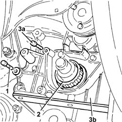
Applies to: engines: 2.5 V6, 3.2 V6; all production periods
Remove the oil seal from the crankshaft front cover.
Applies to: engines: 2.5 V6, 3.2 V6; all production periods
Refitting
RemovingFit the crankshaft front cover, complete with a new gasket, and fix it tightening the bolts to the recommended torque.
 | Fastening | Component | Ø | Value (daNm) |
|---|---|---|---|---|
- | Bolt | CRANKSHAFT FRONT COVER | M6 | 0.9 |
1. Fit a new oil seal (1a) using the tool (1b).
 | Name | Country |
|---|---|---|
1b | Fitting tool | 1.860.949.000 |
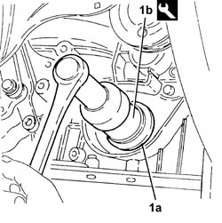
Applies to: engines: 2.5 V6, 3.2 V6; all production periods
Fit the toothed drive pulley.
Fit the alternator mounting bottom bolt.
1020A20 crank case oil sump - r + r clean seals for sealant application
5510C34 rpm and timing sensor (single) - r+r
- 1072B42 left hand or right hand inlet manifold (one) - r+r
Applies to: engines: 1.6 TS , 1.8 TS; all production periods
Removing
RefittingPosition the vehicle on the ramp.
7055B54 under-engine guard - r r
1076B50 exhaust pipe attachment to engine - r + r
1008A44 rear rigid mount - r r
1. Undo the bolt connecting the oil sump to the intermediate shaft support.
2. Undo the drain plug and drain the engine oil.
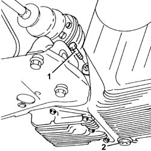
Applies to: engines: 1.6 TS , 1.8 TS; all production periods
1. Undo the front and rear bolts (1a) for the crankcase sump using the spanner (1b).
| Name | Country |
|---|---|---|
1b | Key | 1.822.145.000 |
2. Undo the side bolts (2a) for the crankcase sump using the spanner (2b).
| Name | Country |
|---|---|---|
2b | Key | 1.822.144.000 |
3. Remove the crankcase sump.
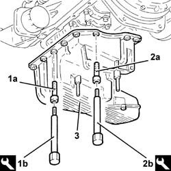
Applies to: engines: 1.6 TS , 1.8 TS; all production periods
1. Remove the engine oil filter using a suitable tool.
2. Undo the centre pin (2a) and disconnect the engine oil heat exchanger (2b) from the crankshaft front cover.
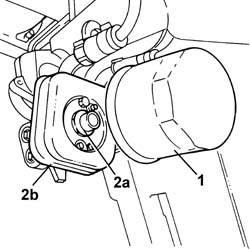
Applies to: engines: 1.6 TS , 1.8 TS; all production periods
1. Undo the bolts (1a) and remove the guard (1b).
2. Fit the flywheel lock.
| Name | Country |
|---|---|---|
2 | Counter-torque | 1.820.630.000 |
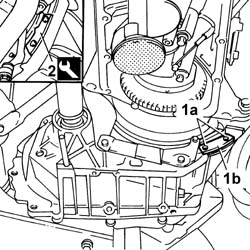
Applies to: all engines; all production periods
1. Undo the bolts (1a) and remove the counter-balance shaft drive pulley (1b).
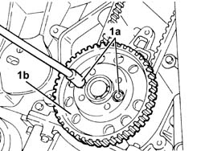
Applies to: engines: 1.6 TS , 1.8 TS; all production periods
1. Undo the left bolt (1a) and remove the camshaft drive pulley (1b).
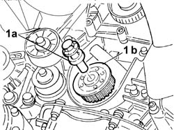
Applies to: engines: 1.6 TS , 1.8 TS; all production periods
Position a hydraulic jack to support the power unit.
1008A46 cam shaft left rigid mount - r r
1. Undo the bolts (1a) and remove the crankshaft front cover (1b) complete with inlet (1c) and gasket.
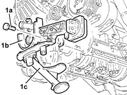
Applies to: engines: 1.6 TS , 1.8 TS; all production periods
Remove the oil seal from the crankshaft front cover.
Applies to: engines: 1.6 TS , 1.8 TS; all production periods
Refitting
RemovingFit the crankshaft front cover complete with inlet and a new gasket and fix it tightening the bolts to the recommended torque.
| Fastening | Component | Ø | Value (daNm) |
|---|---|---|---|---|
- | Bolt | CRANKSHAFT FRONT COVER | M6 | 0.6 - 0.8 |
1. Fit a new crankshaft front oil seal (1a) using the tool (1b).
| Name | Country |
|---|---|---|
1b | Fitting tool | 1.821.247.000 |
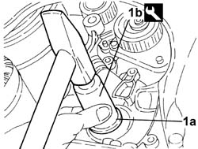
Applies to: engines: 1.6 TS , 1.8 TS; all production periods
1008A46 cam shaft left rigid mount - r r
1. Fit the timing drive pulley (1a) and fix it tightening the bolt (1b) to the recommended torque.
| Fastening | Component | Ø | Value (daNm) |
|---|---|---|---|---|
1b | Bolt with left hand thread | TOOTHED DRIVE PULLEY | M16 | 34.0 ÷ 37.8 |
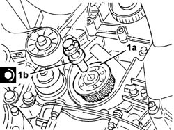
Applies to: all engines; all production periods
1. Fit the counter-balance shaft drive pulley (1a) and fix it tightening the bolts (1b) to the recommended torque.
| Fastening | Component | Ø | Value (daNm) |
|---|---|---|---|---|
- | Bolt | COUNTER-ROTATING SHAFT DRIVE PULLEY | M6 | 2.1 - 2.6 |
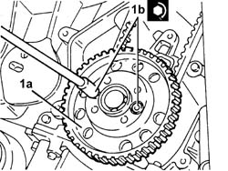
Applies to: engines: 1.6 TS , 1.8 TS; all production periods
Remove the flywheel lock.
| Name | Country |
|---|---|---|
- | Counter-torque | 1.820.630.000 |
Fit the flywheel protective cover and fix it using the bolts.
Place the engine oil heat exchanger back in its housing and fix it using the pin.
Fit a new oil filter, complete with gasket, and fix it tightening it fully by hand.
Apply the recommended sealant to the entire perimeter of the crankcase sump.
 | Type | Component | Name | Qty. |
|---|---|---|---|---|
- | Silicon sealant | OIL SUMP | - | - |
Fit the crankcase sump and tighten the side bolts to the recommended torque using the spanner.
| Fastening | Component | Ø | Value (daNm) |
|---|---|---|---|---|
- | Side bolts | OIL SUMP | M6 | (engine crankcase side) 0.7 ÷ 0.9 |
| Name | Country |
|---|---|---|
- | Key | 1.822.144.000 |
Tighten the front and rear bolts for the crankcase sump to the recommended torque using the spanner.
| Fastening | Component | Ø | Value (daNm) |
|---|---|---|---|---|
- | Front and rear bolt | OIL SUMP | M8 | (Crankcase side) 2.1 ÷ 2.6 |
| Name | Country |
|---|---|---|
- | Key | 1.822.145.000 |
Tighten the engine oil drain plug to the recommended torque.
| Fastening | Component | Ø | Value (daNm) |
|---|---|---|---|---|
- | Plug | ENGINE OIL DRAIN PLUG | M18 | 1.7 - 2.1 |
Tighten the bolt securing the oil sump to the intermediate shaft support.
1008A44 rear rigid mount - r r
1076B50 exhaust pipe attachment to engine - r + r
7055B54 under-engine guard - r r
Refill the engine lubrication circuit using the recommended oil.
| Type | Component | Name | Qty. |
|---|---|---|---|---|
- | Oli [l] | ENGINE LUBRICATION CIRCUIT | SELENIA 20K | 4.4 |
If the vehicle is subject to particulary sporty usage, use the recommended oil for the engine lubrication circuit.
| Type | Component | Name | Qty. |
|---|---|---|---|---|
- | Oli [l] | ENGINE LUBRICATION CIRCUIT | SELENIA RACING | 4.4 |
For the optimum operation of the engine in particularly harsh climatic conditions (temperatures below -20 degrees C), use the recommended oil for the engine lubrication circuit.
| Type | Component | Name | Qty. |
|---|---|---|---|---|
- | Oli [l] | ENGINE LUBRICATION CIRCUIT | SELENIA PERFORMER | 4.4 |
Remove the car from the ramps.
Applies to: engines: 2.0 JTS, 2.0 JTS; all production periods
Removing
RefittingPosition the vehicle on the ramp.
Ensure that the ignition key is in OFF position, then disconnect the negative battery terminal.
 | Name | Connector |
|---|---|---|
- | Battery |
1. Fit the flywheel lock.
| Name | Country |
|---|---|---|
1 | Counter-torque | 1.860.898.000 |
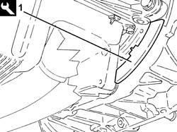
Applies to: engines: 2.0 JTS, 2.0 JTS; all production periods
1. Undo the (left hand thread) bolt (1a) and remove the drive pulley (1b).
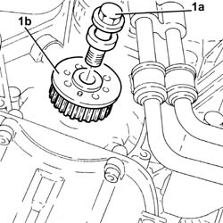
Applies to: engines: 2.0 JTS, 2.0 JTS; all production periods
1. Using a suitable tool (1a) undo the engine oil filter cartridge (1b) and remove it.
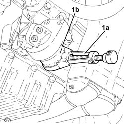
Applies to: engines: 2.0 JTS, 2.0 JTS; all production periods
1. Undo the connector securing the engine oil heat exchanger to the crankshaft oil seal front cover.
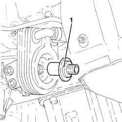
Applies to: engines: 2.0 JTS, 2.0 JTS; all production periods
Drain the air conditioner coolant circuit 5040A10 Air conditioning refrigerant CIRCUIT - Draining and Refilling .
Proceed with removal 5040A20 air conditioner compressor - r+r - includes fluid level check and top up if necessary .
Proceed with removal 5040A26 compressor mount - r r .
Proceed with removal 1076A48 catalytic converter heat shield - r r .
Proceed with removal 1080B62 catalytic converter - r + r .
Proceed with removal 1020A20 crank case oil sump - r + r clean seals for sealant application .
Proceed with removal 7055A43 central front grille - r r .
Proceed with removal 7055A41 RIGHT FRONT GRILLE - R.R. .
Proceed with removal 7055B10 Front BUMPER - R.R. .
1. Undo the bolts (1a) and remove the Lambda sensor electrical wiring mounting bracket (1b).
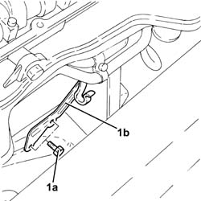
Applies to: engines: 2.0 JTS, 2.0 JTS; all production periods
1. Fit the tool for safely supporting the power unit on the engine block in the position illustrated in the diagram.
| Name | Country |
|---|---|---|
1 | Mount | 1.860.625.000 |
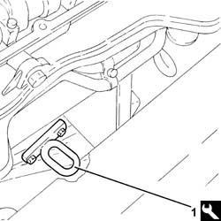
Applies to: engines: 2.0 JTS, 2.0 JTS; all production periods
1. Fit a suitable bracket for safely supporting the power unit on the intake manifold.
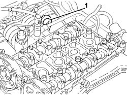
Applies to: engines: 2.0 JTS, 2.0 JTS; all production periods
1. Fit the tool (1a), complete with support mountings (1b).
| Name | Country |
|---|---|---|
1a | Crossmember | 1.820.581.000 |
| Name | Country |
|---|---|---|
1b | Brackets | 1.870.651.000 |
2. Fit the tool (2a) and connect to the brackets fitted previously using the rods (2b).
| Name | Country |
|---|---|---|
2a | Mount | 1.820.226.000 |
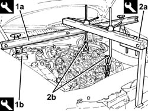
Applies to: engines: 2.0 JTS, 2.0 JTS; all production periods
1. Undo the bolts (1a) and (1b), then remove the timing side rigid engine support (1c).
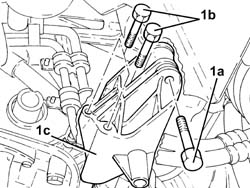
Applies to: engines: 2.0 JTS, 2.0 JTS; all production periods
1. Undo the bolts (1a) and remove the crankshaft front cover (1b) complete with oil seal (1c), gasket (1d) and intake (1e).
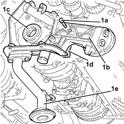
Applies to: engines: 2.0 JTS, 2.0 JTS; all production periods
Release the oil seal from the crankshaft front cover and remove it.
Applies to: engines: 2.0 JTS, 2.0 JTS; all production periods
Refitting
Removing1. Place the crankshaft front cover (1a) complete with engine oil intake (1b) and a new gasket (1c) back in its housing and secure it tightening the bolts (1d) to the recommended torque.
| Fastening | Component | Ø | Value (daNm) |
|---|---|---|---|---|
1d | Bolt | CRANKSHAFT FRONT COVER | M6 | (Engine crankcase side) 0.8 ÷ 1.0 |
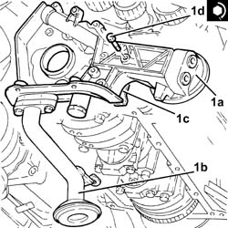
Applies to: engines: 2.0 JTS, 2.0 JTS; all production periods
1. Fit a new crankshaft front oil seal (1a) using the tool (1b).
| Name | Country |
|---|---|---|
1b | Fitting tool | 1.821.147.000 |
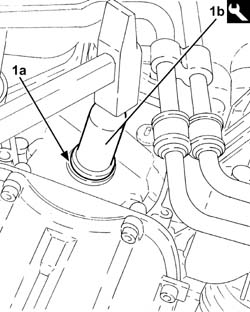
Applies to: engines: 2.0 JTS, 2.0 JTS; all production periods
1. Refit the timing side rigid engine support (1a) and secure it tightening the bolts (1b) and (1c) to the recommended torque.
| Fastening | Component | Ø | Value (daNm) |
|---|---|---|---|---|
1b | Bolt | ENGINE MOUNT TIMING SIDE | M10 | (Crankcase side) 4.5 ÷ 5.5 |
| Fastening | Component | Ø | Value (daNm) |
|---|---|---|---|---|
1c | Bolt | ENGINE MOUNT TIMING SIDE | M12 | (Flexible mounting side) 7.9 ÷ 9.7 |
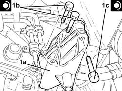
Applies to: engines: 2.0 JTS, 2.0 JTS; all production periods
Remove the safety tools used for supporting the power unit.
Place the Lambda sensor electrical wiring mounting bracket back in its housing and secure it using the bolt.
Proceed with refitting 7055B10 Front BUMPER - R.R. .
Proceed with refitting 7055A41 RIGHT FRONT GRILLE - R.R. .
Proceed with refitting 7055A43 central front grille - r r .
Proceed with refitting 1020A20 crank case oil sump - r + r clean seals for sealant application .
Proceed with refitting 1080B62 catalytic converter - r + r .
Proceed with refitting 1076A48 catalytic converter heat shield - r r .
Proceed with refitting 5040A26 compressor mount - r r .
Proceed with refitting 5040A20 air conditioner compressor - r+r - includes fluid level check and top up if necessary .
1. Tighten the connector securing the engine oil heat exchanger to the crankshaft oil seal front cover to the recommended torque.
| Fastening | Component | Ø | Value (daNm) |
|---|---|---|---|---|
1 | Connector | ENGINE OIL HEAT EXCHANGER | M20 | (Crankcase front cover side) 5.5 ÷ 6.0 |
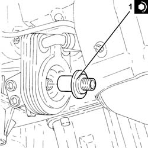
Applies to: engines: 2.0 JTS, 2.0 JTS; all production periods
Lubricate the gasket with engine oil and fit the engine oil filter, tightening fully by hand.
1. Place the drive pulley (1a) back in its housing and secure it tightening the bolt (1b) to the recommended torque.
| Fastening | Component | Ø | Value (daNm) |
|---|---|---|---|---|
1b | Bolt with left hand thread | TOOTHED DRIVE PULLEY | M16 | (Crankshaft side) 20.9 ÷ 23.1 |
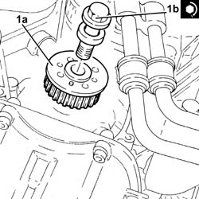
Applies to: engines: 2.0 JTS, 2.0 JTS; all production periods
Remove the flywheel lock.
| Name | Country |
|---|---|---|
- | Counter-torque | 1.860.898.000 |
Connect the negative (-) battery terminal.
Fill the air conditioner coolant circuit 5040A10 Air conditioning refrigerant CIRCUIT - Draining and Refilling .
Remove the car from the ramps.
Topics linked from this page (16)
- 1008A44 rear rigid mount - r r
- 1008A46 cam shaft left rigid mount - r r
- 1020A20 crank case oil sump - r + r clean seals for sealant application
- 1076A48 catalytic converter heat shield - r r
- 1076B50 exhaust pipe attachment to engine - r + r
- 1080B62 catalytic converter - r + r
- 1084A10 ENGINE OIL - Check level and top up, if necessary
- 5040A10 Air conditioning refrigerant CIRCUIT - Draining and Refilling
- 5040A20 air conditioner compressor - r+r - includes fluid level check and top up if necessary
- 5040A26 compressor mount - r r
- 5510C34 rpm and timing sensor (single) - r+r
- 7055A41 RIGHT FRONT GRILLE - R.R.
- 7055A43 central front grille - r r
- 7055B10 Front BUMPER - R.R.
- 7055B54 under-engine guard - r r
- A1B Battery ( BATTERY NEGATIVE )